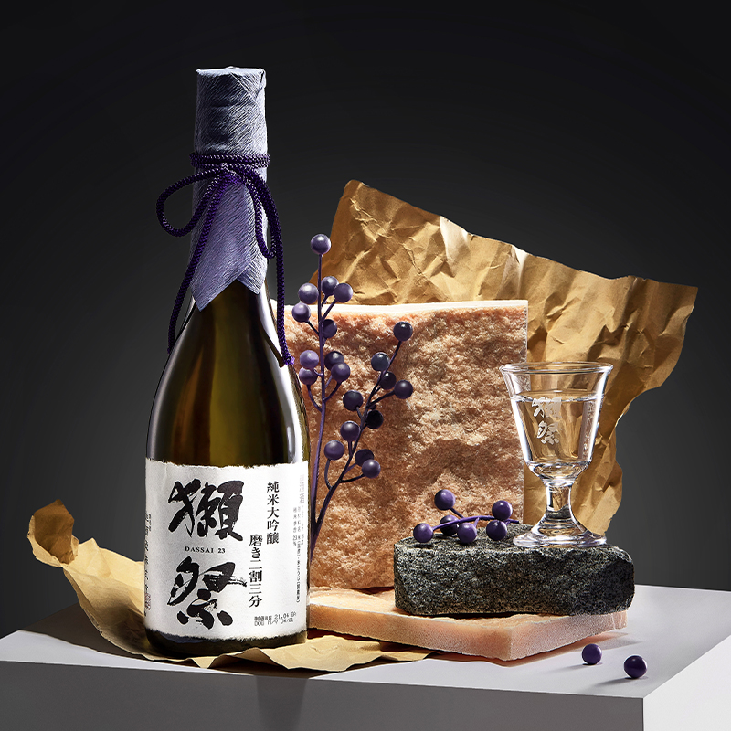
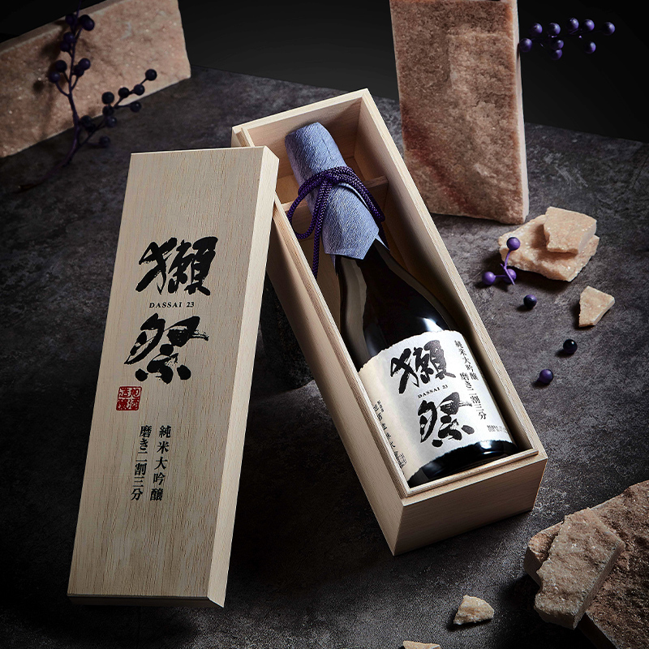

준마이 다이킨조


브랜드 이름: Dassai
공장명: 아사히 맥주 주식회사
유효 기간: 10년
원산지: 일본
용량: 720ml
알콜함량: 16%vol
소개 : 일본에서 사케란 ‘술’이라는 뜻으로 맥주, 소주, 양주 등 모든 술을 일컫는다.
예전에 사케는 크게 쌀, 누룩, 물을 원료로 하여 발효시킨
‘청주(淸酒)’와 청주를 증류시켜 만든 ‘쇼추(燒酒)’로 구분했다.
지금은 사케 하면 일반적으로 쌀과 누룩을 띄워 걸러낸 맑은 술,
청주만을 가리키는 걸로 굳어졌다. 같은 말로 ‘니혼슈(日本酒)’라고도 한다.